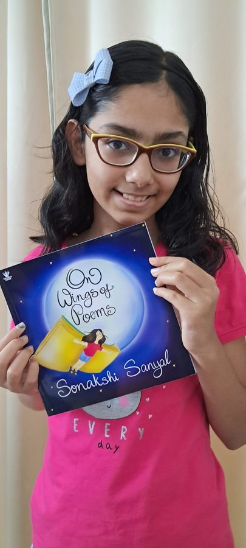
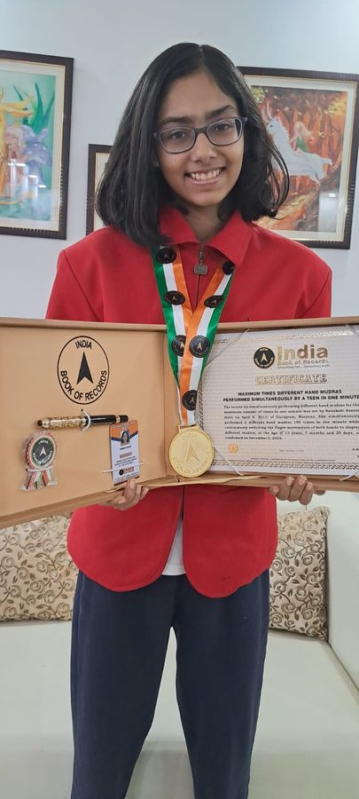
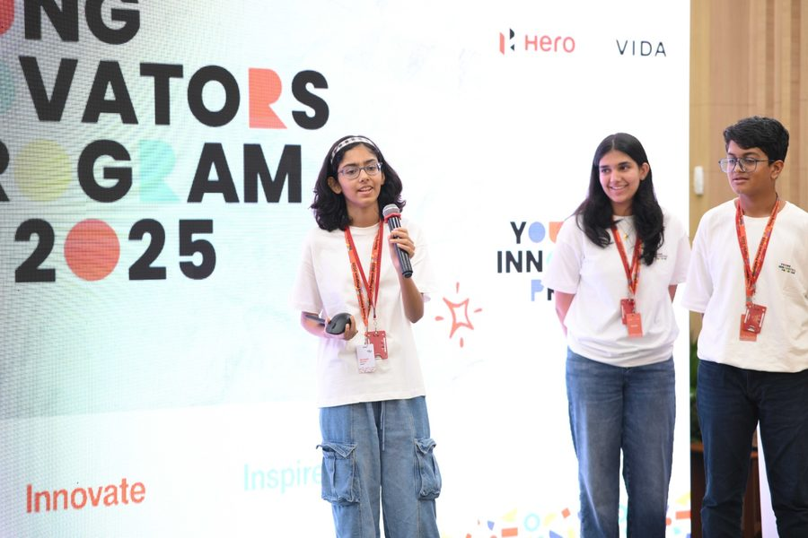
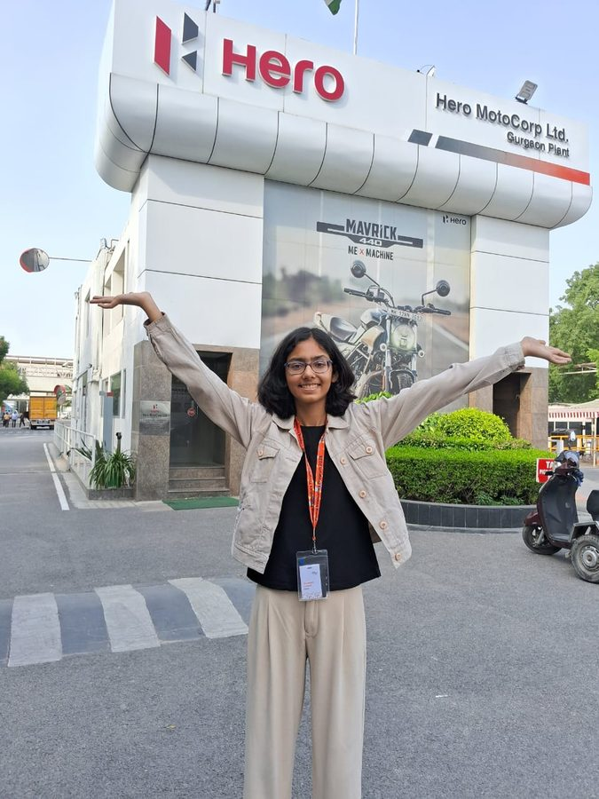
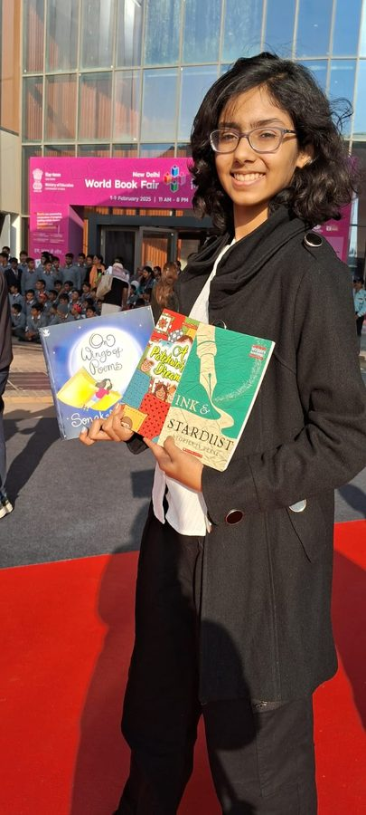
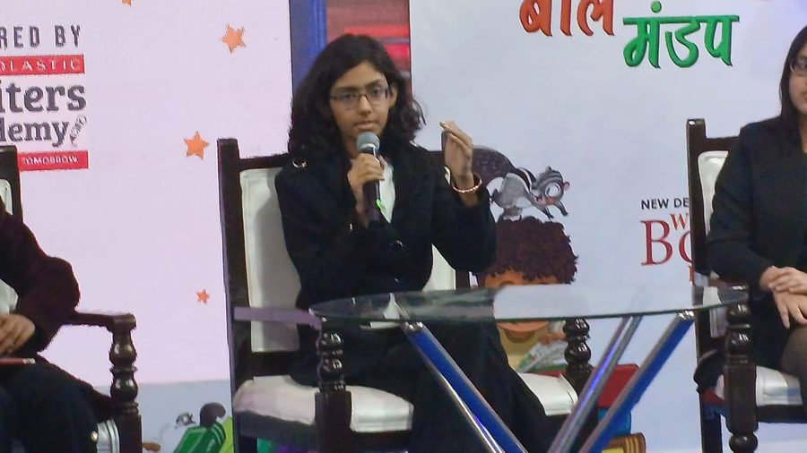
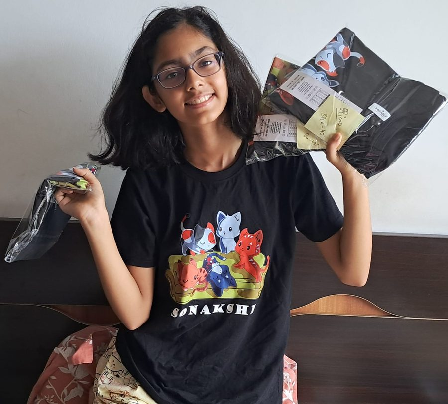
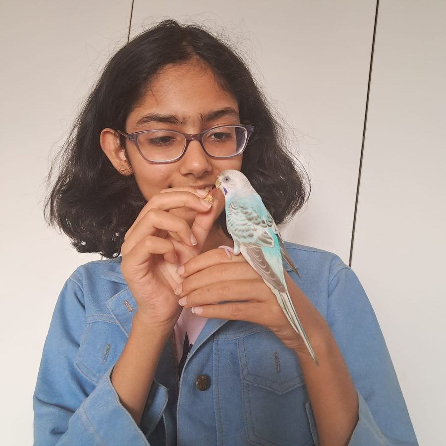
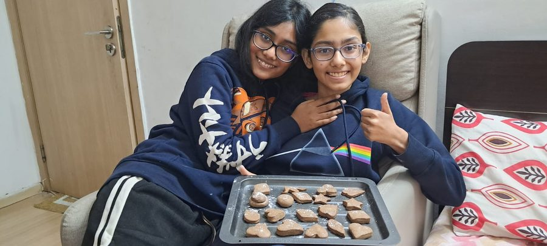

Illustrator & Writer
Sonakshi Sanyal
Painter/Storyteller/Record Holder
Art is just a way to find another escape from reality - somewhere to keep dreaming with my eyes open.
I'm a high-school student, published author, illustrator and artist, with a deep interest in engineering, innovation and creative problem-solving. I work by hand across alcohol marker, watercolour, acrylic, oil pastel, coloured pencil, charcoal and ink, and I keep coming back to the same handful of subjects: women who don't fit the usual mould, fae and mythic figures, animals, and whole worlds invented out of my own head.
As a scholar student and Student Council Prefect I look for chances to learn, lead and collaborate — from Hero MotoCorp's Young Innovators Program to ThinkStartup's U18 Launchpad and Stanford AI4ALL. Off the page I sing, play the keyboard, swim, and start weekends on horseback — and animals find their way into nearly everything I make.









The Sketchbook
Everything, on the wall.
A few early pieces are studies after artists I admire - Scott Sava's linework is what first pulled me into this style. Where a work started as someone else's, it's noted on the piece itself.
Published Work
Words in print.
Programs & Workshops
Where I've been learning.
Pre-professional Experience
Out in the world.
Recognition
A few moments that stuck.
India Book of Records
Set a national record at 13 — 190 dual-hand mudra switches in one minute — now documented in the India and Asia Books of Records, and felicitated at the 2025 convocation.
In Conversation with Student Authors
Featured on Scholastic's student-author series — Season 1 — at the New Delhi World Book Fair 2025, Bharat Mandapam.
Scholastic Writers' Academy
Selected for the Scholastic Writers' Academy, with work published in its collections.
CREST Silver Award
British Science Association research award for my study of thermochromic paint across surfaces and pigment concentrations.
Promising Young Authors
Certified by the National Council of Teachers of English, USA, recognising On Wings of Poems.